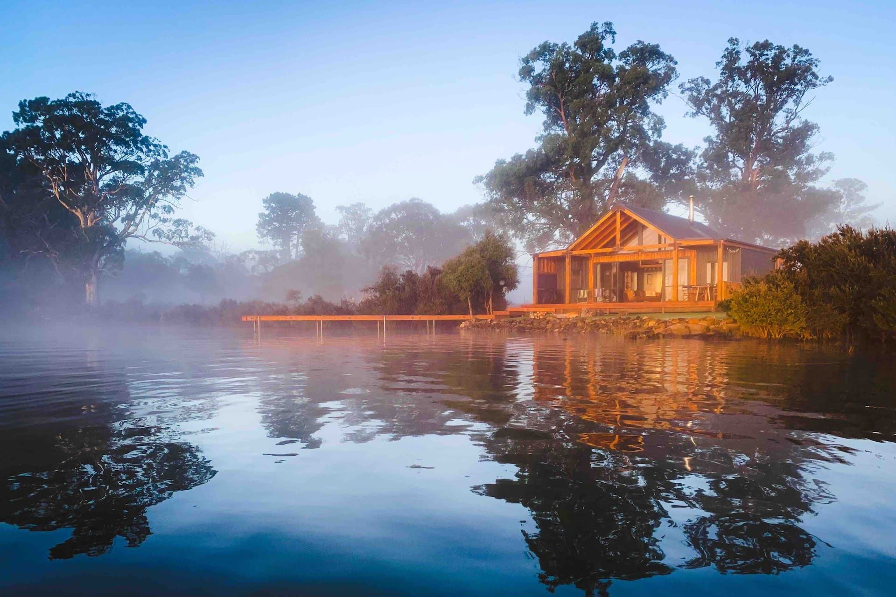
The Doctor's
A lakefront container chalet in the Heartlands of Tasmania. Adults only.
Just what the Doctor ordered.
Wake to the rising sun on the water, with eucalypts all round and the sound of waves and currawongs.
The Doctor's is built from shipping containers and Tasmanian timber, on the water between Lake Sorell and Lake Crescent. Two queen bedrooms, a mezzanine with views over the lakes, a wood heater, a big deck and your own jetty. It's adults only, and an easy place to switch off.
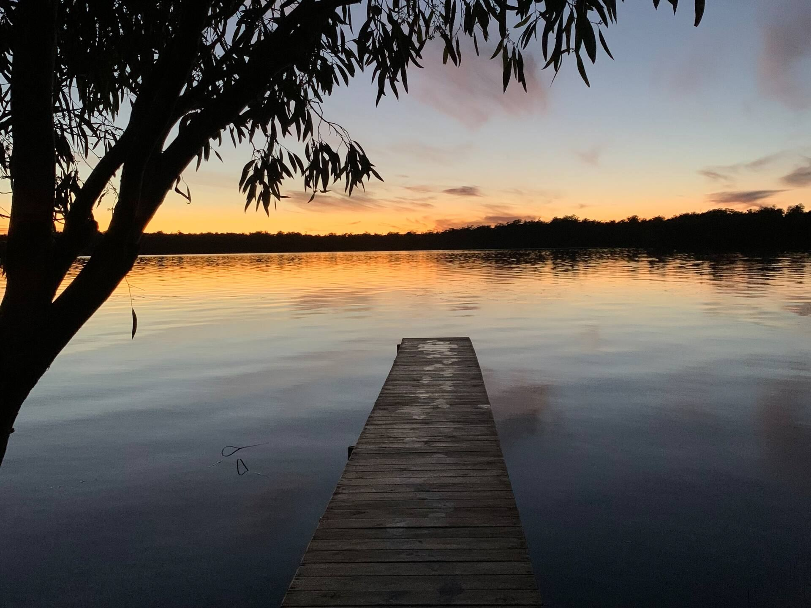
Your script
- Wake to the sun coming up over the lake.
- A morning swim off your own private jetty.
- Say hello to Dale, the resident sheep. A pat and some veggies.
- Take a kayak along the shoreline of Lake Sorell.
- Books, board games, the wood heater, the mezzanine.
- After dark, a torch. Wallabies, possums, wombats, quolls.
Relax, reboot and reset. Repeat as needed.
Two nights minimumContainers and Tasmanian timber
Bespoke furniture, a well-equipped kitchen with a basic pantry, a walk-in rain shower, and two queen bedrooms with water views. The mezzanine looks out over the lakes.
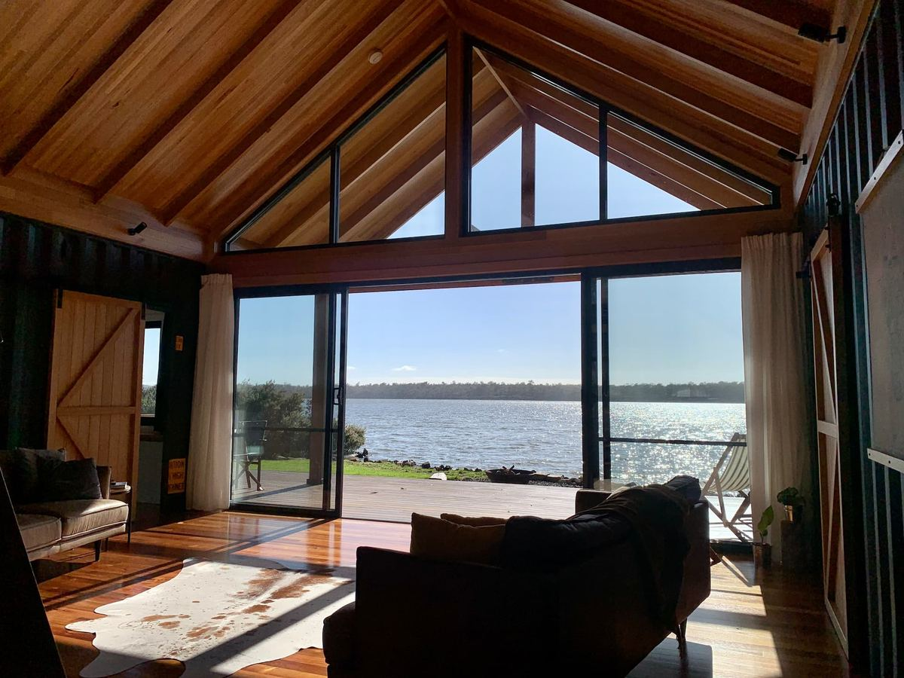
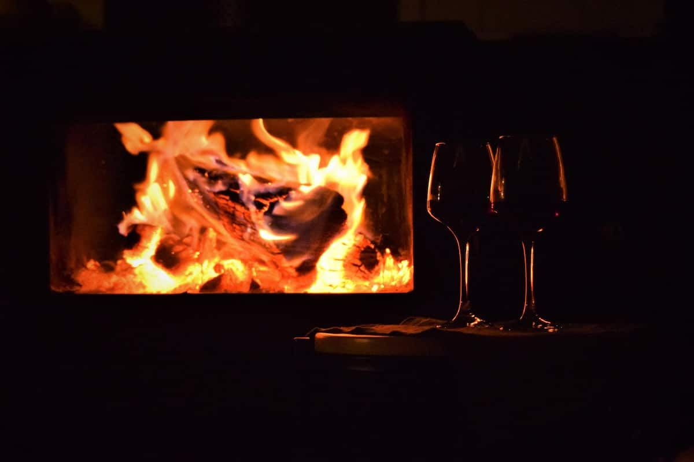
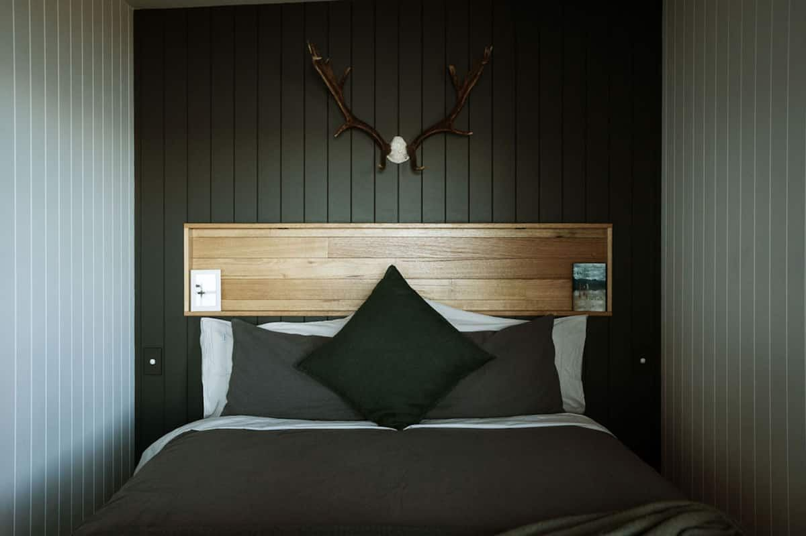
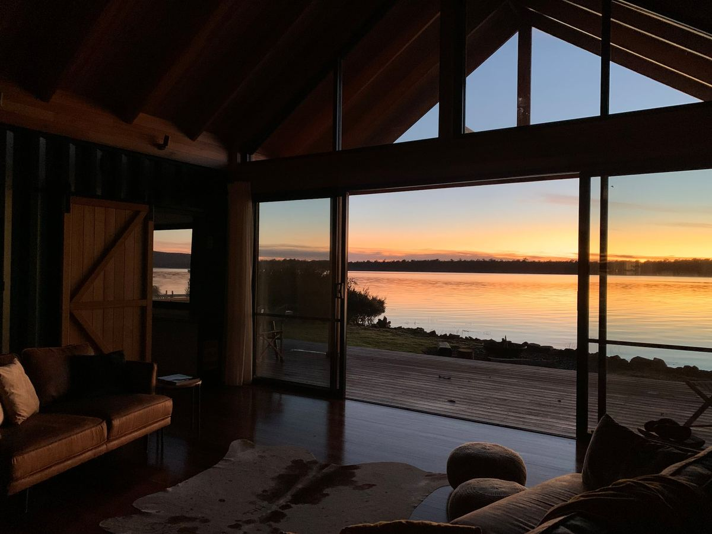
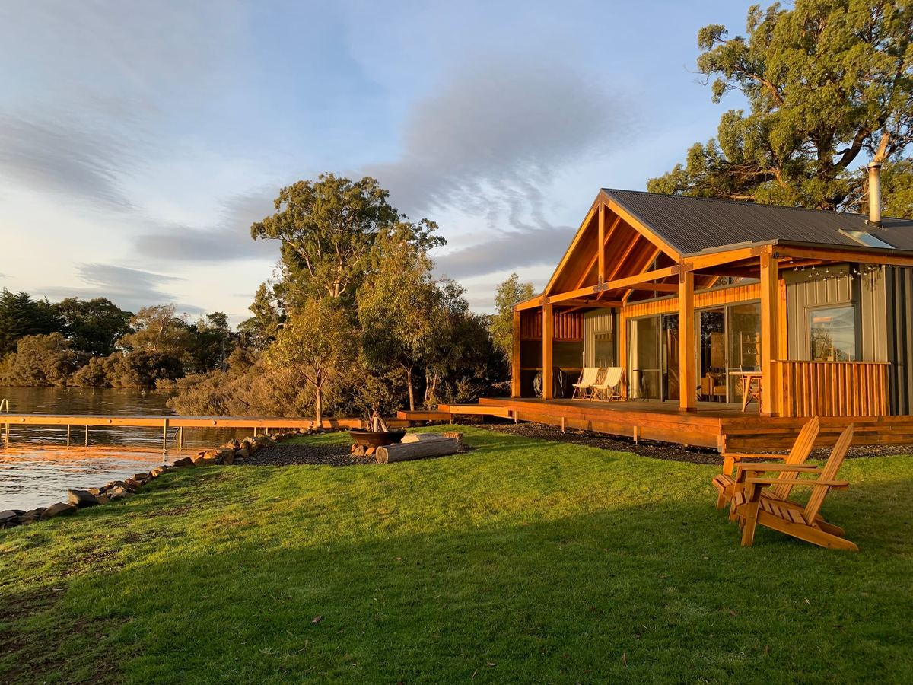
Wild winter days
Interlaken gets snow in winter. All roads in are gravel. Snow can close a road in winter, but there's hardly ever more than one shut, and a 4WD usually gets through.
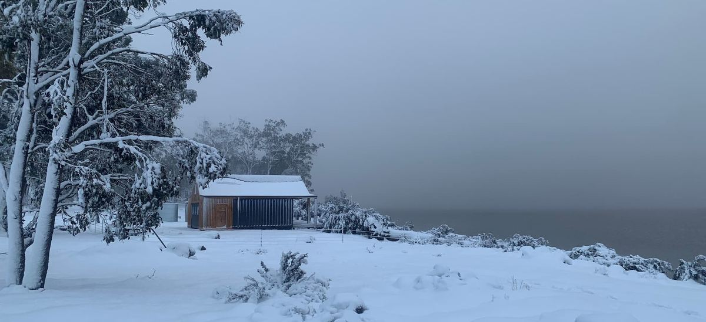
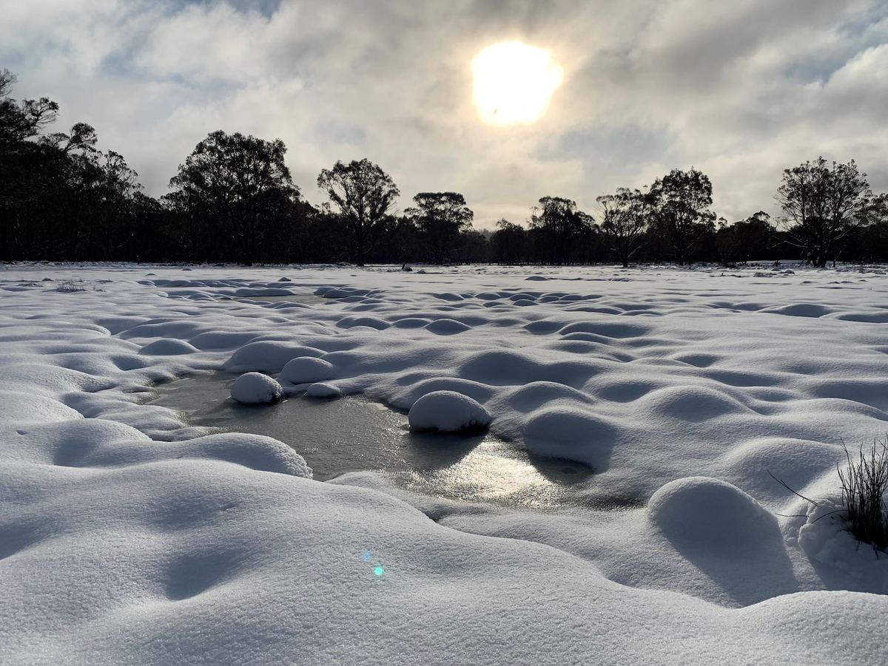
Around the lakes
- Trout
- Lake Sorell is tipped to become the best trout fishing lake in Tasmania again. There are boat ramps nearby, a live lake webcam, and guides they can put you in touch with.
- Birds
- The Interlaken Lakeside Reserve, a Ramsar wetland, is across the road.
- Stars
- Gaze at the night sky and listen to the nocturnal animals.
- Oatlands
- 26 kilometres away, with Georgian sandstone, a working windmill, a whisky distillery and Bunch, a pantry and cafe. The last 15 km in from Oatlands is gravel.
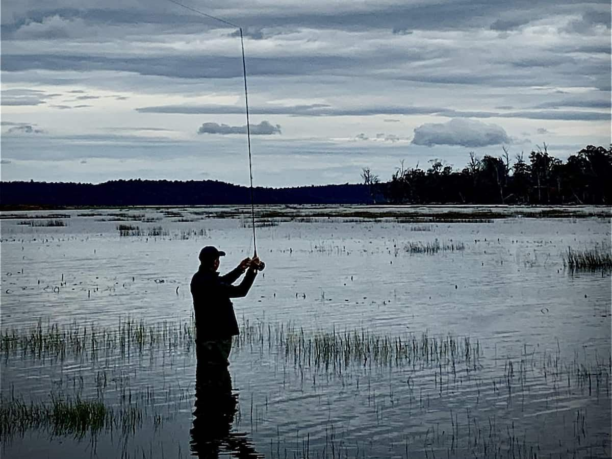
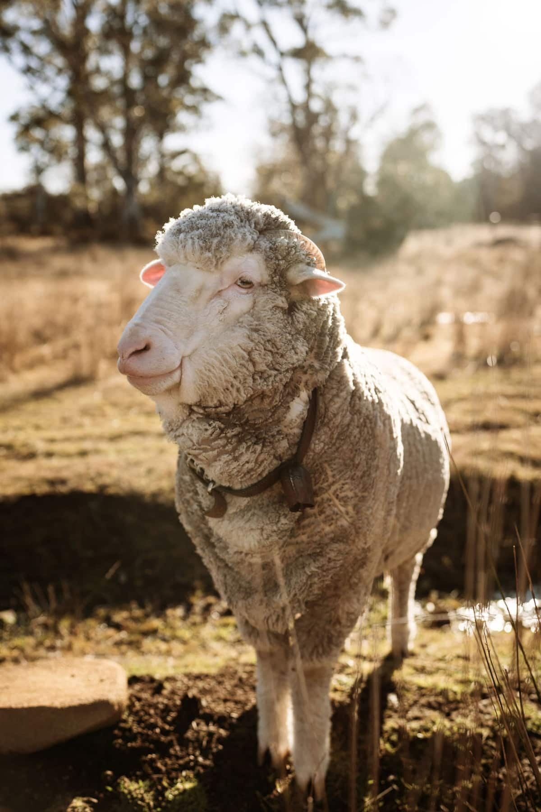
Guests say
5.0from 392 reviews on Airbnb
"Dale the sheep was so fun and all the surrounding wildlife was amazing!"
Elizabeth, Airbnb
"This was exactly what The Doctor ordered!"
Maggie, Airbnb
"Little slice of heaven out in the bush, 10/10 no notes"
Alex, Airbnb
Book your stay
Dates and prices are on Airbnb, with up to 25% off stays longer than two nights. A private chef, an elopement or a fishing guide can be arranged: ask in advance.
- Sleeps
- 4 adults, in two queen bedrooms
- Minimum
- 2 nights
- Where
- Interlaken, between Lake Sorell and Lake Crescent, in the Heartlands of Tasmania
- Getting in
- Gravel roads, no 4WD needed. Room for a boat or trailer.